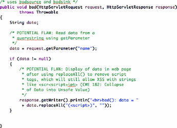
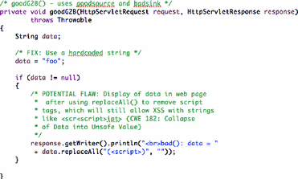
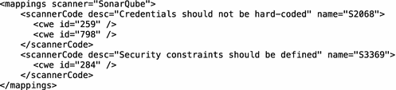
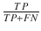
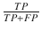
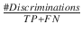
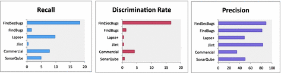
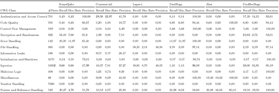

1 Introduction
The need and urgency for quality software is higher than any other time in our history because of the rate of interconnection and dependence on software. Society, systems, and businesses are driven by software systems that are integrated into a complex system of systems (e.g. automation systems, business systems, Internet of Things, mobile devices). This is changing the threat landscape continuously. Unfortunately, the rise in consumer software technologies and methodologies for delivering them are not matched with an increase in security investment. This is evidenced in large-scale vulnerability reports and regular breaches [1].
Information gathering, exploits and hacking tools [e.g. Kali Linux] are now easily accessible and the ability for an attacker to cause serious damage is more real than ever. On the other side, developers do not code with the mindset of an attacker because they care more about delivering functionalities. Common coding mistakes and inadvertent programming errors are weaknesses that often evolve into exploitable vulnerabilities1. It is claimed that, about 70-percent of reported attacks are performed at the application layer rather than the network layer [12].
Integrating static analysis tool could be envisaged to help developers code defensively [26]. Tools are important in agile development that values continuous delivery [21]. Static analysis tools (SATs) play important role to ensure product meets the quality requirements. SATs exercise application source code and check them for violations [8]. With respect to security, the decision to implement static analysis tools has to be guided. Using a static analysis tool does not imply an automatic improvement in the security of the code. For instance, teams may use such tools for checking styles, method quality, and maintenance related issues (e.g. duplicated code). These do not translate directly to security, as elegant code can still be vulnerable to attacks [20].
The security group at Telenor Digital is focused on integrating security activities in their agile teams. Telenor Digital is a community within Telenor Group, a Norwegian based international telecom operator, working to position Telenor as a digital service provider. As a result, the community researches into new possibilities and develops the next-generation digital solutions for Telenor customers transnationally. Telenor Digital is distributed in Oslo, Trondheim, and Bangkok. Each team has autonomy in its processes and leverages agile development methodologies.
One of the steps the security group has taken is to collaborate with the SoS-Agile project2, which investigates how to meaningfully integrate software security into agile software development activities. The method of choice for the project is Action Research [16]. The combination of scientific and practical objectives align with the basic tenet of action research, which is to merge theory and practice in a way that real-world problems are solved by theoretically informed actions in collaboration between researchers and practitioners [16]. Therefore, the approach taken has considered the usefulness of the results both for the companies and for research.
Since traditional security engineering process is often associated with additional development efforts and as a result often invokes resentment among agile development teams [5]. It is thus important for the security group to approach development teams in a way that guarantees successful integration. This paper investigates the efficiency and developers’ perceptions of static application security testing (SAST) tool within the agile teams at Telenor Digital. Our findings have implications for both practice and research. They show the challenges faced by developers, enumerate practical improvement approaches, and contribute to the body of knowledge about the performance of static analysis tools.
The rest of this paper is structured as follows: In Sect. 2, we present the background to the study and our research questions. In Sect. 3, we describe our case study and present the results. Section 4 discusses the implications of the study for both practice and research. We present the limitations to the study in Sect. 5 and conclude in Sect. 6.
2 Background
Different studies have investigated why developers do not use static analysis tool to find bugs e.g. [18] or how developers interact with such tools when diagnosing potential security vulnerabilities e.g. [23]. Findings show that false positives and the way warnings are presented are barriers to use. Similarly, deep interaction by developers with tool’s result and several questions they asked highlight another challenge of cognitively demanding tasks that could threaten the use of such tool [23]. Baca et al. [4] evaluated the use of a commercial static analysis tool to improve security in an industrial settings. They found that, although the tool reported some relevant warnings, it was hard for developers to classify them. In addition, developers corrected false positive warnings, which created vulnerabilities in previously safe code. Hofer [17] has used some other metrics to guide tools’ selection such as installation, configuration, support, reports, errors found, and whether the tools can handle a whole project rather than parsing single files.
Other researchers have also performed independent quantitative evaluation of static analysis tools with regards to their performances to detect security weaknesses. The Center for Assured Software (CAS) [19] developed a benchmark testsuite with “good code” and “flawed code” across different languages to evaluate the performance of static analysis tools. They assessed 5 commercial tools and reported the highest recall of 0.67 and highest precision of 0.45. Goseva-Popstojanova and Perhinschi [15] investigated the capabilities of 3 commercial tools. Their findings showed that the capability of the tools to detect vulnerabilities was close to or worse than average. Díaz and Bermejo [10] compared the performance of nine tools mostly commercial tools using the SAMATE security benchmark test suites. They found an average recall of 0.527 and average precision of 0.7. They found also that the tools detected different kinds of weaknesses. Charest [7] compared 4 tools against 4 out of the 112 CWEs in the SAMATE Juliet test case. The best average performance in terms of recall was 0.46 for CWE89 with an average precision of 0.21.
The methodology employed by the security group and the SoS-Agile research team combined both the qualitative and quantitative approaches. Although, we could learn from the reported studies in the literature, we could not directly apply these results to the organization’s case because of context issue. First, the set of tools that are to be evaluated against the benchmark of our choice are mostly not within the set reported in the literature and in many cases the names of the tools are not disclosed. Second, tools’ evolution over time is also a context factor that makes it reasonable to re-evaluate them even if they have been previously evaluated. Third, the developers in the organization could express specific challenges that might not have been mentioned in the literature but would be important if the security team wants to succeed with introducing a static analysis tool.
Therefore, there are 2 research questions that are of interest to the security group at Telenor Digital and the SoS-Agile research team with regards to integrating SAST tools in the organization:
RQ1. What are the capabilities of the SAST tools in order to make informed decision for the development team? Implementing SAST tools in a meaningful and useful ways requires evaluating various tools independently in order to make informed decision. We disregard statements from vendors as they can overrate the capability of their tools. We do not distinguish between open source and commercial tools because implementing inefficient tools irrespective of license type has implications with respect to cost, time, and long-term perception/future adoption.
Furthermore, different classes of weaknesses are of interest. For instance, how does a SAST tool perform with regards to authentication and authorization weaknesses or with regards to control flow management weaknesses. Such understanding is crucial to know the strengths and weaknesses so that even if a tool is adopted, our knowledge of its strengths would prevents overestimation and a false sense of security and our knowledge of its weaknesses would guide further testing activities later in the development lifecycle.
RQ2. How do developers perceive static analysis tools with respect to successful implementation and long-term adoption by teams? Understanding the desired features in SAST tools that could increase the chance of adoption would be important. Likewise, understanding the challenges and developers’ fears regarding new security tools that could lessen the chance of adoption would also be useful. By using this complimentary information, managements have better possibility to improve the chance of adoption by the team.
3 Case Study
We have used quantitative and qualitative approaches to investigate our research questions. For RQ1, we performed an independent evaluation using a benchmarking approach [2, 19] of open source SAST tools and a commercial SAST tool being considered for adoption at the organization. For RQ2, we interviewed 6 developers in one of the teams regarding their perceptions about SAST tool.
3.1 Evaluating Static Analysis Tools
Our approach to evaluate SAST tools includes the selection of benchmark testsuites, selection of static analysis tools, running the analysis tools on the testsuites, and presenting the results using performance metrics. Evaluating tools using natural code is very challenging [14]. One challenge is reviewing each result of the tool to determine whether it is correct or not. This is a time consuming activity with no guarantee of correctness. Another is the difficulty to compare results from different tools since they report differently. We thus decided to use an artificial benchmark test suite.
Benchmark for Evaluating SAST Tools: Different benchmark test suites exist for testing security tools. Common examples are the OWASP Benchmark [2] and the NIST test suites [19]. We decided for NIST dataset because it is not only limited to top 10 vulnerabilities unlike OWASP benchmark test dataset. In addition, NIST dataset is designed for all range of weaknesses and not only limited to web-based weaknesses like OWASP.
NIST Test Suite: The National Institute of Standards and Technology (NIST) Software Assurance Reference Dataset (SARD) Project [19] provides a collection of test suites intended to evaluate the performance of different SAST tools. The test suite uses the common weaknesses and enumeration (CWE) dictionary by MITRE (see footnote 1) and contains artificial bad and good files/methods. The bad file/method contains the actual weakness to be tested by the tool. The good file/method contains no exploitable weakness. Figure 1 shows an example of a test case that is vulnerable to cross-site scripting (XSS) attack since the user-supplied value stored in the variable “data” is not properly sanitized before being displayed. However, Fig. 2 shows a fix by using a hardcoded value for “data” (trusted input). Although, the sink still contains the weakness that could lead to XSS attack, no user-supplied value is passed to the variable “data”. Therefore, this weakness cannot be exploited. This simple design is valuable to differentiate between tools that only perform string pattern matching against those that use more sophisticated approaches (e.g. control/data-flow analysis). We have used the Juliet Test Suite v1.2 with a total of 26,120 test cases covering 112 different weaknesses (CWEs). In order to compare the tools at a higher granularity level, the CWEs are aggregated into 13 categories as shown in Table 1.

Fig. 1.
Bad source and bad sink method for XSS - CWE80

Fig. 2.
Good source and bad sink method for XSS - CWE80
Selected Static Analysis Tools: We have evaluated 5 open source tools (FindBugs, FindSecBugs, SonarQube, JLint, and Lapse+) and a mainstream commercial tool. Commercial tools use proprietary license and are thus challenging for research purposes. The open source tools are selected based on language support, ease of installation and that they can be used to find security flaws. Additionally, FindBugs, FindSecBugs, and SonarQube are widely adopted. The commercial static analysis tool is being considered for adoption at Telenor Digital.
Automated Analysis and Comparison: Tools report results in different formats and thus makes the comparison of tools a somewhat cumbersome process. We need to create a uniform format to compare the results from the tools. We adopted the approach by Wagner and Sametinger [24] and transformed each report into a CSV file, where each line contains details about each detected flaw, such as: name of the scanner (tool), abbreviation of the flaw reported by the scanner, name of the file and line number where the flaw was located, as well as the message reported by the scanner. To map the reported flaws from each scanner to their possible CWE codes, we used the CWE XML-mapping file as shown in Fig. 3 for each scanner (tool). This file contains the tool’s code for a reported flaw and their possible CWE equivalent. Where vendors do not provide this information, we look for the best possible matching from the CWE database. The flaws reported in the CSV reports for each tool are then mapped to CWE numbers using the scanner’s CWE XML-mapping files.
Table 1.
Weakness categories [13]
Weakness class | Description | Examples |
|---|---|---|
Authentication and Access Control | Testing for unauthorized access to a system | CWE-620: Unverified Password Change |
Code Quality | Issues not typically security related but could lead to performance and maintenance issues | CWE-478: Omitted Default Case in a Switch |
Control Flow Management | Timing and synchronization issues | CWE-362: Race Condition |
Encryption and Randomness | Weak or wrong encryption algorithms | CWE-328: Reversible One-Way Hash |
Error Handling | Failure to handle errors properly that could lead to unexpected consequences | CWE-252: Unchecked Return Value |
File Handling | Checks for proper file handling during read and write operations to a file on the hard-disk | CWE-23: Relative Path Traversal |
Information Leaks | Unintended leakage of sensitive information | CWE-534: Information Leak Through Debug Log Files |
Initialization and Shutdown | Checks for proper initializing and shutting down of resources | CWE-415: Double Free |
Injection | Input validation weaknesses | CWE-89: SQL Injection |
Malicious Logic | Implementation of a program that performs an unauthorized or harmful action (e.g. worms, backdoors) | CWE-506: Embedded Malicious Code |
Miscellaneous | Other weaknesses types not in the defined categories | CWE-482: Comparing instead of Assigning |
Number Handling | Incorrect calculations, number storage, and conversion weaknesses | CWE-369: Divide by Zero |
Pointer and Reference Handling | Proper pointer and reference handling | CWE-476: Null Pointer Dereference |

Fig. 3.
XML mapping of tools to CWE
We automate some parts of the process and manually process the other parts due to how the tools can be configured and accessed (e.g. through a command line, user interface or integrated development environment) and the different operating systems they support. For example, only FindBugs, FindSecBugs, and SonarQube could be executed via command line on OS X platform. JLint is only compatible with Windows OS and for Lapse+, we have to generate the result through the IDE.
We have used the tool in [24] for tools accessible via command line. The tool did not perform recursive scanning of files in subfolders and thus missed several of the test suite files. We fixed this serious bug and provided an extension of the tool3. For Lapse+ and Commercial tool, we processed the reports separately and converted them to the uniform CSV format because of platform differences. Lastly, we developed additional Java tool to compute the performance metrics to fit the metrics originally defined by CAS [13].
3.2 Performance Metrics
We use the following performance metrics [13].
True Positive (TP): The number of cases where the tool correctly reports the flaw that is the target of the test case.
False Positive (FP): The number of cases where tool reports a flaw with a type that is the target of the test case, but the flaw is reported in non-flawed code.
False Negative (FN): This is not a tool result. A false negative result is added for each test case for which there is no true positive.
Discrimination: The number of cases where tool correctly reports the flaw and does not report the non-flaw (i.e. TP = 1 and FP = 0). The discrimination rate is usually equal or lower than the TP rate (Recall).
Blank (Incidental flaws): This represents tool’s result where none of the types above apply. More specifically, either the tool’s result is not in a test case file or the tool’s result is not associated with the test case in which it is reported.
- Recall = 
- Precision = 
- DiscriminationRate = 
It is possible to have both TP and FP in the same file as shown in Fig. 2. In this case, the tool is not sophisticated enough to discriminate for instance when data source is hardcoded and therefore does not need to be sanitized. When we compute discrimination, we are only concerned with cases when the tool reports TP. We set the discrimination to 1 if it does not report FP on the same file.
We adopt the “strict” metrics defined by CAS [13] as they truly reflect real-world situation. For instance, Wagner and Sametinger [24] modified this metrics by accepting tools’ detection in the “non-flaw” part of the code as valid as long as they are reported in the target CWE file. While this modification may make a tool’s performance look better, in the true sense, it does not reflect how developers interact with tool’s report. Precision of reported issue in a file is important otherwise it might lead to confusion and cognitive stress when developers try to make sense of it.
3.3 Results of Tools’ Evaluation
We report the evaluation results of the 6 tools on Juliet Test Suite v1.2. As shown in Table 2 and Fig. 4, FindSecBugs records the highest recall of 18.4% with approximately 90% precision. It also has the highest discrimination rate, which is slightly lower than its recall. Lapse+ follows with a detection rate of 9.76% but with poor discrimination rate of 0.41%. However, when we break down the result into different weakness categories, this number was found only in “File Handling” and “Injection” weaknesses. The results from the Commercial tool is not as competitive as it ranked third. However, results in the categories revealed certain areas where the tool could be ahead of others.
The tools reported several other warnings, which are recorded under “incidental flaws”. These warnings are not the target of the test but they indicate the “noise” levels of the tools. Many of the warnings could be categorized as “trivial” when compared with security issues. An example is warning about code styling.
We made the following observations under each weakness category (see Table 3):
Table 2.
Number of identified weaknesses by tools from a total of 26120 flaws
Tool | TP | FP | #Discrimination | Incidental flaws |
|---|---|---|---|---|
SonarQube | 1292 | 1275 | 200 | 237845 |
Commercial | 2038 | 3834 | 1085 | 360212 |
FindSecBugs | 4811 | 604 | 4338 | 41637 |
Lapse+ | 2550 | 2736 | 108 | 18950 |
JLint | 125 | 26 | 104 | 586 |
FindBugs | 426 | 98 | 341 | 22245 |

Fig. 4.
Overall performance results from the tools
Table 3.
Performance of tools against weakness categories

Authentication and Authorization: FindSecBugs has the best detection rate of 57.20% and followed by “Commercial” tool with 29.39%. The discrimination rate is as good as the detection rate for all the tools. Both JLint and Lapse+ did not detect any weakness in this category.
Number Handling: None of the tools could detect the weaknesses under this category. The tools report different issues in the “Number Handling” CWE files, which are not the actual weaknesses. This was alarming and indicates that manual code review in addition to automatic analysis by tool should be performed for number handling weaknesses (e.g. division by zero).
File Handling: Lapse+ produced the best detection rate of 58.35%. However, only 2.54% (discrimination rate) is correctly identified without flagging warning simultaneously in the “bad code” construct. Apart from Lapse+, only FindBugs and FindSecBugs could detect weaknesses in this category with a detection rate of 3.59%.
Miscellaneous: JLint recorded the best performance under miscellaneous (e.g. CWE-482: Comparing instead of Assigning) category with a recall and discrimination rate of 19.32%. Commercial tool and FindBugs have detection rates of 9.09% and 8.09% respectively. SonarQube, Lapse+ and FindSecBugs did not detect any weakness in this category.
Code Quality: The tools’ performance is surprisingly low in this category. The highest recall of 6.8% were recorded by FindSecBugs and FindBugs.
Control Flow Management: FindBugs, FindSecBugs, and Commercial tool detected some issues in this category. However, FindSecBugs and FindBugs detection rate is 11.36 times better than the commercial tool.
Encryption and Randomness: FindSecBugs has the highest detection rate of 22.83% but with very low discrimination rate of 2.73%. SonarQube detected 16.40% issues, while Commercial tool detected 1.93% issues. The remaining 3 tools did not find any issue in this category.
Error Handling: Only SonarQube and FindBugs detected weaknesses in this category. SonarQube has a detection rate of 25.35% and FindBugs has 11.97% detection rate.
Information Leaks: Only the Commercial tool detected weaknesses in this category with a detection rate of 9.57%
Initialization and Shutdown: The performances of the tools are very poor in this category. Four tools (SonarQube, Commercial, FindBugs, and FindSecBugs) detected some weaknesses with the highest detection rate of 0.57%.
Injection: JLint did not find any issue in this category. FindSecBugs has the highest detection rate of 38%, followed by Lapse+ at 18.85% but with poor discrimination rate of 0.79% and Commercial tool with 16.07%.
Malicious Logic: Only Commercial tool and FindSecBugs detected weaknesses under this category. The highest detection rate is 4.17% by FindSecBugs while commercial tool only detected 1.23% of the weaknesses.
Pointer and Reference Handling: Lapse+ did not detect any weakness in this category. FindBugs, SonarQube, FindSecBugs, and JLint have relatively similar detection rate of about 20%. However, only FindSecBugs showed the best discrimination power of 19.5%. Commercial tool detection rate is 50% lower than the rest of the tools.
3.4 Interview
We have interviewed 6 out of the 8 developers in the selected team. The interview was divided into 5 sections. The first part covered the professional background such as job title, years of programming experience, and whether they had security related experiences. The second part covered personal opinion on their expectations and challenges with implementing SAST tools. It also included questions about their current practices. The third covered their development approaches. For instance software development methodology, release cycles, and refactoring practices. The fourth part concerned questions about development environments and the last part covered team’s quality assurance and security practices.
3.5 Practices and Demography
The team is composed of developers that specialize in separate functionalities, such as business support, system integration, hosting, setup and infrastructure. They use a combination of Scrum and Kanban and perform sprint review every two weeks.
The goals of the review are to: keep track of project objectives, define the scope of the next sprint, define a set of tasks that should be included in the next iteration, and perform time estimation for those tasks. From privacy and information security point of view, the developers mentioned that they store sensitive personal data; such as personal messages and voice conversations and these assets are the most critical part of their software. Any security weakness that leads to an unauthorized disclosure or modification of the customers’ highly sensitive information can be damaging to the customers and their business.
Quality assurance is performed in multiple phases starting from the design phase of the software development life-cycle (SDLC), when the team discusses potential issues. The team codes mainly in Java and uses common coding standards for Java and additional standards proposed at Telenor Digital. They perform code review, unit and acceptance testing. Lastly they perform continuous refactoring of their code.
Despite all these practices, there is no specific focus on security testing of the products. Potential security threats are discussed during the design phase of the SDLC and bad practices are avoided while coding. The team is, however, aware of some design issues they have to fix, such as securing confidential and sensitive logs and as a result, they desire to have automatic security analysis on a regular basis. The developers are free to choose the development software platform they are most comfortable with. Therefore, they develop on all the three major OS platforms: OS X, Windows and Linux. They use various integrated development environments (IDEs), such as IntelliJ, NetBeans, Emacs, Eclipse, and Sublime. Their software is mostly written in Java, but they also develop parts of it in JavaScript, shell script and Python. Jenkins4 is used as a build server for continuous integration.
3.6 Experience with Static Analysis Tools and Security
The team is composed of developers with 4 to 37 years of development experience (see Table 4). The developers mentioned that they have used a static analysis tool called sonar before. However, this tool was used for checking code quality such as styling, standards, and large methods. One developer said: “...We use something called Sonar, ..., It’s good for finding complexity in software, like referential loops ..., Bad style, non-conformance to coding standard, methods that are large or complex, ...”. The developers stated not to have used the tool to find specific security weaknesses. Although they are somehow familiar with vulnerabilities, nearly all indicated little experience with using static analysis tools specifically for security audits.
Table 4.
Professional background and experiences
Title | Programming experience (years) | Familiarity with security vulnerabilities (scale: 1–5) |
|---|---|---|
Software engineer | 4 | 2 |
Senior software engineer | 18 | 3 |
Senior software engineer | 37 | 3 |
Senior software engineer | 20 | 3–4 |
Senior software engineer | 20 | 3 |
Software engineer | 6 | 4 |
3.7 Perceptions of the Developers About SAST Tools
Setting Up the Tool and Getting it to Work. The developers fear the effort to setup a third party SAST tool and get it to work seamlessly in their development and build environments. One of the developers who has experience with previous tool said: “...Making the things actually work, that usually is the worst thing. The hassle-factor is not to be underestimated...”. Both Emanuelsson and Nilsson [11] and Hofer [17] report on installation as a seemingly important metric when choosing a static analysis tool.
Invasiveness and Disruption to Regular Workflow. Alerts may distract and interrupt the developer’s flow and can also be a time consuming activity. The developers are clear about the fact that acting on the issues reported from the tool would depend on whether it does not overburden them. They fear that the tool may disrupt the flow of their work. One of the developers said: “...It depends a lot on the tool and how easy it is to use and how it flows into your regular workflow,...”
False Positives or Trivial Issues. The developers were unanimous about their concerns with false positives. They are concerned about the tool reporting high number of trivial or unnecessary issues. For instance, one of the developers said: “...At least from my experience with the Sonar tool is that it sometimes complains about issues that are not really issues...”
Cognitive Effort to Understand Tool’s Messages. This is a concern to the developers. They would want to use the tool with minimum amount of cognitive effort. It should not be very difficult to understand the message or vocabulary used by the tool. A developer said: “...What I fear is if they make it necessary to engage mentally a lot in the tool, as to the messages it uses then I would be reluctant to use it...”
Broad Range of Programming Languages. The developers point out the challenge of supporting several programming languages. They develop using several languages and foresee that it might be challenging to generate static analysis warnings for each of the languages. A developer said: “...We have several software languages that we write in. Predominantly Java and Javascript. But also some C++ as well. So to target each of those different languages would be an issue ...”
Huge Technical Debts. One of the challenges expressed is having a huge technical debt after running an implemented static analysis tool. The team rushed their products into the market the previous year and thus fears the possibility that the tool would flag many issues for refactoring. A developer says: “...and the problem is that when you set it up at this stage of the project we have a huge design debt, because I guess things were implemented quickly, rushed before summer last year...”
4 Discussions and Implications
Based on the results from the interview and independent tools evaluation, we discuss the implications of our findings.
One Tool Is Not Enough: We found that using one SAST tool is not enough to cover the whole range of security weaknesses at the implementation phase. This is synonymous with the findings by Austin and Williams [3] that compares different techniques across implementation and verification stages. It becomes obvious that developers have to tradeoff on some of their requirements. For instance, full language support might not be covered by one single tool and a single tool that covers many languages might suffer from low performances in many of them. Future research should focus on how to harmonize results from different tools for maximum performance.
Tools’ Capability Is Low: The capability of the tools is generally low with regards to detecting security weaknesses in the Juliet Java code. The commercial tool, although highly rated in the market is not an exception. This is very challenging for developers, as they need to focus on important security warnings and disregard the noise. One helpful way we found is to filter the results by using the CWE tag provided by some of the tools. For example, FindSecBugs, SonarQube and the Commercial tool provide support for this feature.
Static Analysis Results Are Non-functional Requirements: Developers have hidden bias when it comes to fixing issues reported by static analysis tools. Statements such as: “...if you are just looking for functionality and spend a lot of time on making your system secure or safe and doing things that you are not getting paid for or the customers are not willing to pay for...” and “...And of course in itself is not productive, nobody gives you a hug after fixing SonarQube reports,...” demonstrate the challenges and need for making security as part of the development process and in a seamless manner. It shows a need for a top down approach where product owners (POs) are able to prioritize security and include it in the developers’ workflow. Since static analysis reports are non-functional requirements and not features, they never become user story in many cases in agile settings. However, it is possible to adopt the approach in Rindell et al. [22] by moving relevant tool’s report into the product backlog.
Do Not Underestimate Integration Effort: Developers are wary of tools that take lots of effort to integrate. This is understandable, as it has cost implication both at the present and in the future. For instance, it would require increased effort to upgrade such tool if something breaks in it. An approach taken by Telenor Digital is to dedicate a resource person as responsible for tools’ implementations, configurations, and maintenance. This is beneficial as it prevents the “hassle-factor” and allows the agile team to focus squarely on business delivery.
Developers Are Positive to Have a SAST Tool: On the other hand, the developers agree that implementing a SAST tool would improve the security of their product. Some are very enthusiastic to learn new things and to get immediate feedback when mistakes are made and learn more about language and platform internals. These would be possible if the tools are able to point out real issues, if it is possible to mark part of the code that should not be scanned, if it is automated and easy to use, if it is not cognitively demanding to interact with the tool, and if the tools report in a way that developers understand.
Collaboration Between Researchers and Practitioners: Practitioners sometimes view research-oriented studies to be costly and time consuming. As a result, practitioners could be skeptical to collaborate. However, collaboration between researchers and practitioners can be important and useful drivers to meaningfully improve security in practice. From the perspective of the security group at Telenor Digital, the study was valuable to provide insights both qualitatively and quantitatively and to also drive future decisions. The statement by the head of the security team confirmed this: “...But I have in particular now noted that it might not be sufficient with only one tool and that it might be more important than we anticipated before this study to understand strengths and weaknesses of the different available tools for static analysis. I also noticed that several open source tools seem to have strengths worthwhile taking into account....”
Advice for Future Integrators: One major challenge with integrating security activities in agile is the dichotomy between the security professionals and developers [6]. Security activities are often perceived by developers to be time consuming. While the traditional assurance practice dictates to maintain independence between security professionals and developers in order to be objective and neutral [25]. This is confirmed through the use of third-party consultants by some of the teams at Telenor Digital to perform penetration testing for their applications [9]. The security team at Telenor Digital has similar challenges with bridging this gap. The approach used in this study was helpful to allow the security team understands how the developers perceive security activities and what are the important factors that could motivate to adopt them.
It is also important to warn that there is a cost for implementing inefficient tools. If there is no benefit from the tool, developers would not use it and this may also affect future possibility to adopt new tool. It is very important to let developers become aware of the strengths and weaknesses of the tools early so that they can have a realistic expectation. It is obvious that today’s SAST tools still need lots of improvements to become better with catching implementation security bugs. However, it is very helpful when developers are part of the decision making such that they know the capability of the tools. This collective “ownership” culture of agile method [6, 25] is the approach undertaken at Telenor Digital to introduce and implement a new static application security testing tool for their agile teams.
5 Limitations
Size and Subjectivity: Interview subjects are few with different experiences and perceptions about static analysis tools. We can therefore not generalize the results.
Type of Benchmark: We have used artificial Java code for our evaluation, it is thus possible that real-code and different languages produce different results.
Size of Tools: We have used a few number of tools including a very popular commercial tool, however, other tools may present different results to what we have reported.
Size/Type of Organization: The organization where this study is carried out is medium-sized and as a result, stakeholders in smaller organizations or startups may express different perceptions.
Literature Review: Our pre-study review was conducted informally and not systematically.
6 Conclusion
We have investigated developers’ perceptions and efficiency of static analysis tools for finding security bugs. We found several barriers exist for adoption by teams such as tools’ low performance, technical debts when implemented late, non-functional nature of security bugs, and the need for many tools. However, teams are positive to use SAST tool to reduce security bugs. We recommend onboarding development teams to learn about the capability of prospective tools and to create synergy between them and the security team.
Acknowledgements
The work in this paper was carried out at Telenor Digital with support by the SoS-Agile team. The SoS-Agile project is supported by the Research Council of Norway through the project SoS-Agile: Science of Security in Agile Software Development (247678/O70).

Open Access This chapter is licensed under the terms of the Creative Commons Attribution 4.0 International License (http://creativecommons.org/licenses/by/4.0/), which permits use, sharing, adaptation, distribution and reproduction in any medium or format, as long as you give appropriate credit to the original author(s) and the source, provide a link to the Creative Commons license and indicate if changes were made.
The images or other third party material in this book are included in the book's Creative Commons license, unless indicated otherwise in a credit line to the material. If material is not included in the book's Creative Commons license and your intended use is not permitted by statutory regulation or exceeds the permitted use, you will need to obtain permission directly from the copyright holder.
References
1.
Bugtraq mailing list. http://seclists.org/bugtraq/. Accessed 10 May 2017
2.
Owasp. benchmark. https://www.owasp.org/index.php/Benchmark. Accessed 20 Oct 2016
3.
Austin, A., Williams, L.: One technique is not enough: a comparison of vulnerability discovery techniques. In: 2011 International Symposium on Empirical Software Engineering and Measurement (ESEM), pp. 97–106. IEEE (2011)
4.
Baca, D., Carlsson, B., Petersen, K., Lundberg, L.: Improving software security with static automated code analysis in an industry setting. Softw. Pract. Exp. 43(3), 259–279 (2013)Crossref
5.
ben Othmane, L., Angin, P., Weffers, H., Bhargava, B.: Extending the agile development process to develop acceptably secure software. IEEE Trans. Dependable Secur. Comput. 11(6), 497–509 (2014)Crossref
6.
Beznosov, K., Kruchten, P.: Towards agile security assurance. In: Proceedings of the 2004 Workshop on New Security Paradigms, pp. 47–54. ACM (2004)
7.
Charest, N.R.T., Wu, Y.: Comparison of static analysis tools for Java using the Juliet test suite. In: 11th International Conference on Cyber Warfare and Security, pp. 431–438 (2016)
8.
Chess, B., McGraw, G.: Static analysis for security. IEEE Secur. Privacy 2(6), 76–79 (2004)Crossref
9.
Soares Cruzes, D., Felderer, M., Oyetoyan, T.D., Gander, M., Pekaric, I.: How is security testing done in agile teams? A cross-case analysis of four software teams. In: Baumeister, H., Lichter, H., Riebisch, M. (eds.) XP 2017. LNBIP, vol. 283, pp. 201–216. Springer, Cham (2017). https://doi.org/10.1007/978-3-319-57633-6_13Crossref
10.
Díaz, G., Bermejo, J.R.: Static analysis of source code security: assessment of tools against samate tests. Inf. Softw. Technol. 55(8), 1462–1476 (2013)Crossref
11.
Emanuelsson, P., Nilsson, U.: A comparative study of industrial static analysis tools. Electron. Notes Theor. Comput. Sci. 217, 5–21 (2008)Crossref
12.
Fong, E., Okun, V.: Web application scanners: definitions and functions. In: 40th Annual Hawaii International Conference on System Sciences, 2007, HICSS 2007, pp. 280b–280b. IEEE (2007)
13.
Center for Assured Software. CAS static analysis tool study - methodology. https://samate.nist.gov/docs/CAS%202012%20Static%20Analysis%20Tool%20Study%20Methodology.pdf. Accessed 20 Oct 2016
14.
Center for Assured Software. Juliet test suite v1.2 for c/c++ user guide. https://samate.nist.gov/SRD/resources/Juliet_Test_Suite_v1.2_for_C_Cpp_-_User_Guide.pdf. Accessed 20 Oct 2016
15.
Goseva-Popstojanova, K., Perhinschi, A.: On the capability of static code analysis to detect security vulnerabilities. Inf. Softw. Technol. 68, 18–33 (2015)Crossref
16.
Greenwood, D.J., Levin, M.: Introduction to Action Research: Social Research for Social Change. SAGE Publications, Thousand Oaks (2006)
17.
Hofer, T.: Evaluating static source code analysis tools. Technical report (2010)
18.
Johnson, B., Song, Y., Murphy-Hill, E., Bowdidge, R.: Why don’t software developers use static analysis tools to find bugs? In: 2013 35th International Conference on Software Engineering (ICSE), pp. 672–681. IEEE (2013)
19.
Okun, V., Delaitre, A., Black, P.E.: NIST SAMATE: static analysis tool exposition (sate) iv, March 2012. https://samate.nist.gov/SATE.html
20.
Oyetoyan, T.D., Soares Cruzes, D., Jaatun, M.G.: An empirical study on the relationship between software security skills, usage and training needs in agile settings. In: 2016 11th International Conference on Availability, Reliability and Security (ARES), pp. 548–555. IEEE (2016)
21.
Phillips, A., Sens, M., de Jonge, A., van Holsteijn, M.: The IT Managers Guide to Continuous Delivery: Delivering Software in Days. BookBaby, Pennsauken (2014)
22.
Rindell, K., Hyrynsalmi, S., Leppänen, V.: Case study of security development in an agile environment: building identity management for a government agency. In: 2016 11th International Conference on Availability, Reliability and Security (ARES), pp. 556–563. IEEE (2016)
23.
Smith, J., Johnson, B., Murphy-Hill, E., Chu, B., Lipford, H.R.: Questions developers ask while diagnosing potential security vulnerabilities with static analysis. In: Proceedings of the 2015 10th Joint Meeting on Foundations of Software Engineering, pp. 248–259. ACM (2015)
24.
Wagner, A., Sametinger, J.: Using the Juliet test suite to compare static security scanners. In: 2014 11th International Conference on Security and Cryptography (SECRYPT), pp. 1–9. IEEE (2014)
25.
Wäyrynen, J., Bodén, M., Boström, G.: Security engineering and extreme programming: an impossible marriage? In: Zannier, C., Erdogmus, H., Lindstrom, L. (eds.) XP/Agile Universe 2004. LNCS, vol. 3134, pp. 117–128. Springer, Heidelberg (2004). https://doi.org/10.1007/978-3-540-27777-4_12Crossref
26.
Zheng, J., Williams, L., Nagappan, N., Snipes, W., Hudepohl, J.P., Vouk, M.A.: On the value of static analysis for fault detection in software. IEEE Trans. Softw. Eng. 32(4), 240–253 (2006)Crossref
Footnotes
3
Bisera Milosheska and Tosin Daniel Oyetoyan. Analyzetoolextended. https://github.com/biseram/AnalyzeToolExtended.
4
Jenkins is a self-contained, open source automation server, which can be used to automate all sorts of tasks such as building, testing, and deploying software.